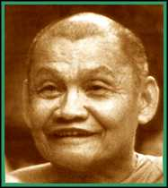

|
WHAT
IS CONTEMPLATION Ajahn Chah |
 |
|
Q: When you teach about the value of contemplation, are you speaking of sitting and thinking over particular themes, the thirty-two parts of the body, for instance? A: That is not necessary when the mind is truly still. When tranquillity is properly established the right object of investigation becomes obvious. When contemplation is 'True', there is no discrimination into 'right' and 'wrong', 'good' and 'bad'; there is nothing even like that. You don't sit there thinking, 'Oh, this is like that and that is like this,' etc. That is a coarse form of contemplation. Meditative contemplation is not merely a matter of thinking -- rather it's what we call 'contemplation in silence'. Whilst going about our daily routine we mindfully consider the real nature of existence through comparisons. This is a coarse kind of investigation but it leads to the real thing. Q: When you talk about contemplating the body and mind, though, do we actually use thinking? Can thinking produce true Insight? Is this vipassana? A: In the beginning we need to work using thinking, even though later on we go beyond it. When we are doing true contemplation all dualistic thinking has ceased; although we need to consider dualistically to get started. Eventually all thinking and pondering comes to an end. Q: You say that there must be sufficient tranquillity (samadhi) to contemplate. Just how tranquil do you mean? A: Tranquil enough for there to be presence of mind. Q: Do you mean staying with the here-and-now, not thinking about the past and future? A: Thinking about the past and future is all right if you understand what these things really are, but you must not get caught up in them. Treat them the same as you would anything else -- don't get caught up. When you see thinking as just thinking, then that's wisdom. Don't believe in any of it! Recognise that all of it is just something that has arisen and will cease. Simply see everything just as it is -- it is what it is -- the mind is the mind -- it's not anything or anybody in itself. Happiness is just happiness, suffering is just suffering -- it is just what it is. When you see this you will be beyond doubt. Q: I still don't understand. Is true contemplating the same as thinking? A: We use thinking as a tool, but the knowing that arises because of its use is above and beyond the process of thinking; it leads to our not being fooled by our thinking any more. You recognise that all thinking is merely the movement of the mind, and also that the knowing is not born and doesn't die. What do you think all this movement called 'mind' comes out of? What we talk about as the mind -- all the activity -- is just the conventional mind. It's not the real mind at all. What is real, just IS, it's not arising and it's not passing away. Trying to understand these things just by talking about them, though, won't work. We need to really consider impermanence, unsatisfactoriness and impersonality (anicca, dukkha, anatta); that is, we need to use thinking to contemplate the nature of conventional reality. What comes out of this work is wisdom; and if it's real wisdom everything's completed, finished -- we recognise emptiness. Even though there may still be thinking, it's empty -- you are not affected by it. Q: How can we arrive at this stage of the real mind? A: You work with the mind you already have, of course!
See that all that arises is uncertain, that there is nothing stable
or substantial. See it clearly and see that there is really nowhere
to take a hold of anything -- it's all empty. When you see the things
that arise in the mind for what they are, you won't have to work with
thinking any more. You will have no doubt whatsoever in these matters.
To talk about the 'real mind' and so on, may have a relative use in
helping us understand. We invent names for the sake of study, but actually
nature just is how it is. For example, sitting here downstairs on the
stone floor. The floor is the base -- it's not moving or going anywhere.
Upstairs, above us is what has arisen out of this. Upstairs is like
everything that we see in our minds: form, feeling, memory, thinking.
Really, they don't exist in the way we presume they do. They are merely
the conventional mind. As soon as they arise, they pass away again;
they don't really exist in themselves. Q: Is this mind you are talking about called the 'Original Mind'? A: What do you mean? Q: It seems as if you are saying there is something else outside of the conventional body-mind (five khanda). Is there something else? What do you call it? A: There isn't anything and we don't call it anything -- that's all there is to it! Be finished with all of it. Even the knowing doesn't belong to anybody, so be finished with that, too! Consciousness is not an individual, not a being, not a self, not an other, so finish with that -- finish with everything! There is nothing worth wanting! It's all just a load of trouble. When you see clearly like this then everything is finished. Q: Could we not call it the 'Original Mind'? A: You can call it that if you insist. You can call it whatever you like, for the sake of conventional reality. But you must understand this point properly. This is very important. If we didn't make use of conventional reality we wouldn't have any words or concepts with which to consider actual reality -- Dhamma. This is very important to understand. Q: What degree of tranquillity are you talking about at this stage? And what quality of mindfulness is needed? A: You don't need to go thinking like that. If you didn't
have the right amount of tranquillity you wouldn't be able to deal with
these Qs at all. You need enough stability and concentration to know
what is going on -- enough for clarity and understanding to arise. Asking
questions like this shows that you are still doubting. You need enough
tranquillity of mind to no longer get caught in doubting what you are
doing. If you had done the practice you would understand these things.
The more you carry on with this sort of questioning, the more confusing
you make it. It's all right to talk if the talking helps contemplation,
but it won't show you the way things actually are. This Dhamma is not
understood because somebody else tells you about it, you must see it
for yourself -- paccattam. |
|
| Home Page |